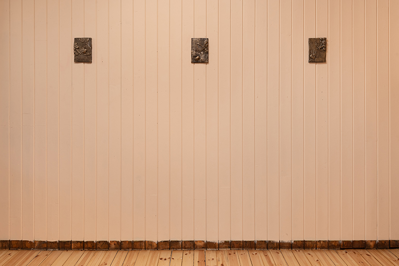
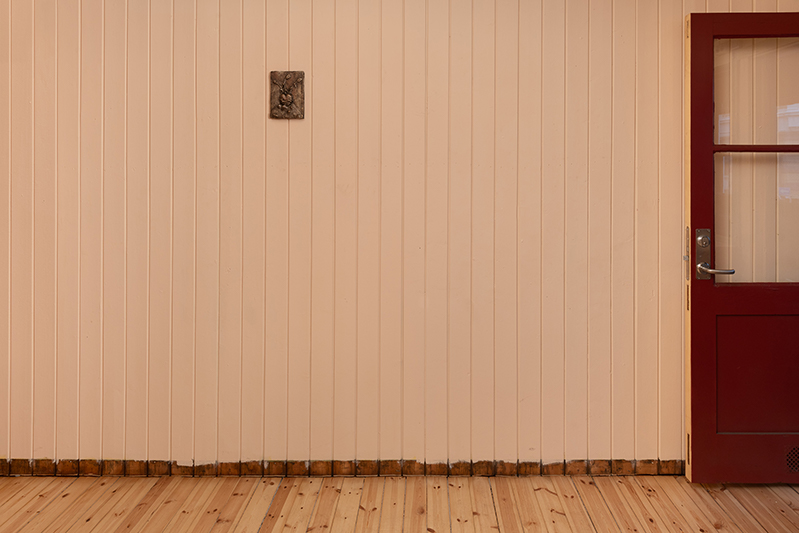
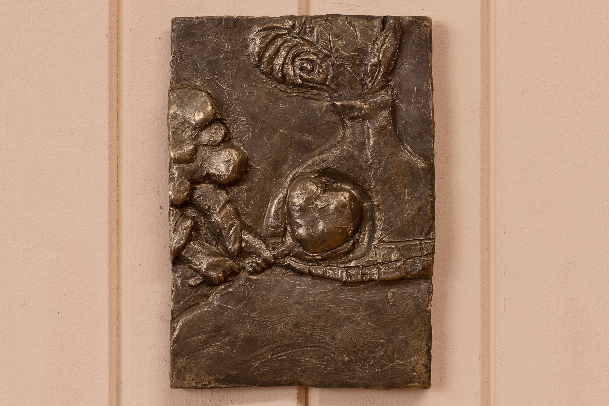
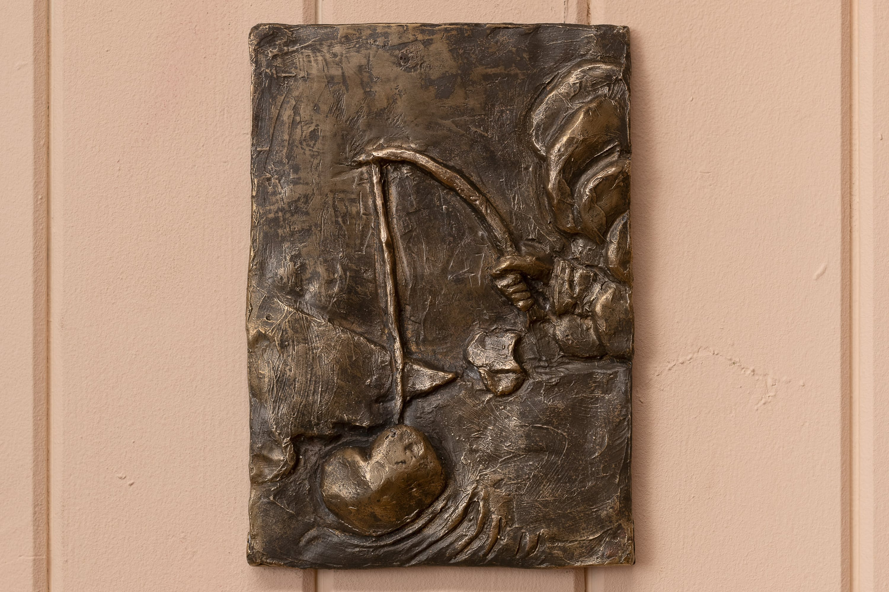
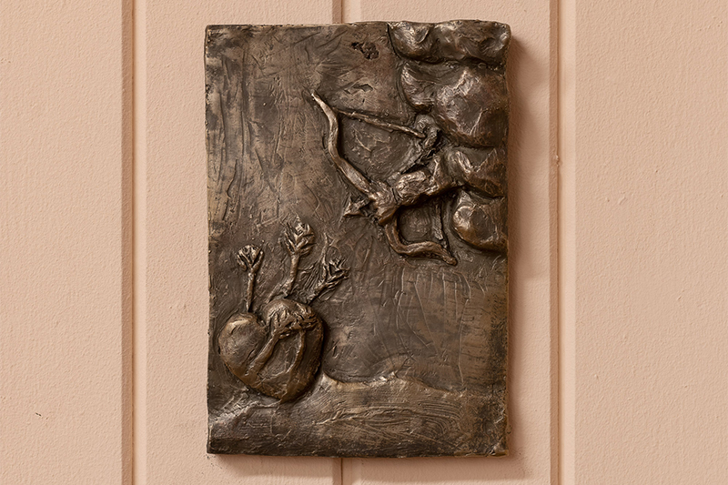
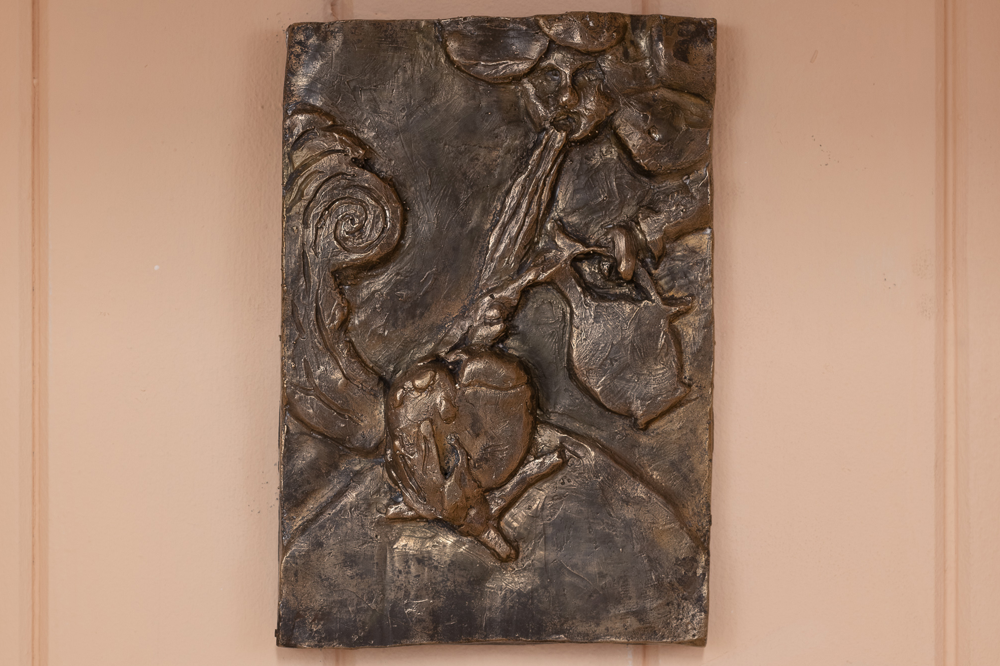
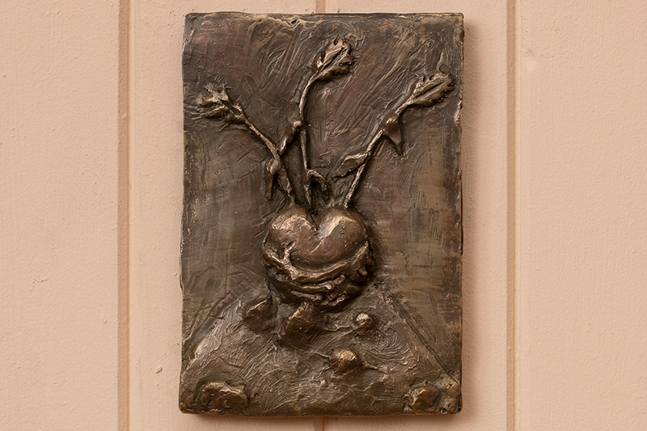

Syllables in Heart
Salgshallen, Oslo Norway
14.10. - 29.10.23

Syllables in Heart, 2023

Syllables in Heart, 2023

Syllables in Heart, 2023

Preparation, 2023, bronze, 21 x 14.8 cm

Surprise, 2023, bronze, 21 x 14.8 cm

Sorrow, 2023, bronze, 21 x 14.8 cm,

Cure, 2023, bronze, 21 x 14.8 cm

Growth, 2023, bronze, 21 x 14.8 cm
Det slår
skriver sig selv I stavelser i hjertet:
Forberedelse
Overraskelse
Sorg
Kur
Vokser
The exhibition is based on the oracle cards "The Sibyl of the Heart." The story behind these cards dates back to 1617 when Lucas Jennis, a German editor of several Rosicrucian books, decided to publish a treaty entitled "Societas Jesus et Rosae Crucis Vera" (The true Society of Jesus and the Rosy Cross), written by the theologian Daniel Cramer. For this, an emblem was created for each of the book's 40 chapters. The theme of the work is the heart, symbolizing human emotions and the moods that involve all people during their existence in the material world. In these emblems, the heart undergoes various processes and experiences through 40 stages. The cards and images are an example of meditative Rosicrucian exercises, working on the spiritual center of each man or woman.
Thanks to Rasmus Daugbjerg
Photo: Kunstdok / Istvan Virag
The exhibition was supported by Arts and Culture Norway.
links:
Tzvetnik
Kuba Paris